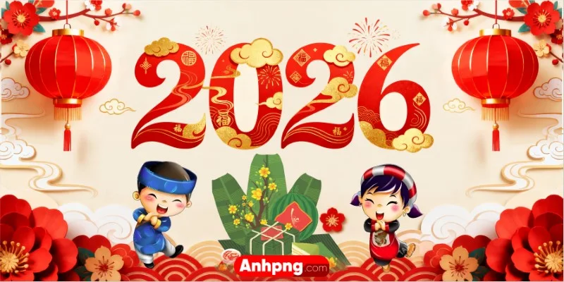
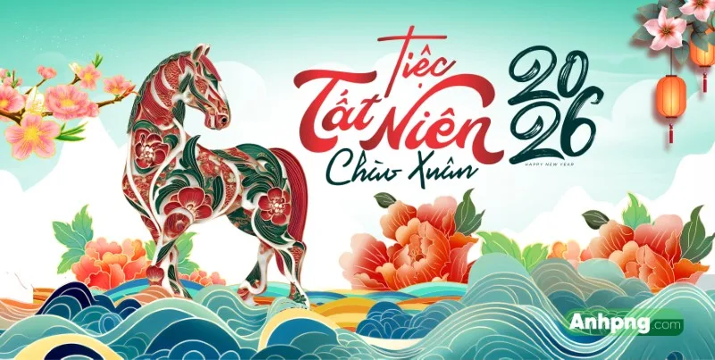
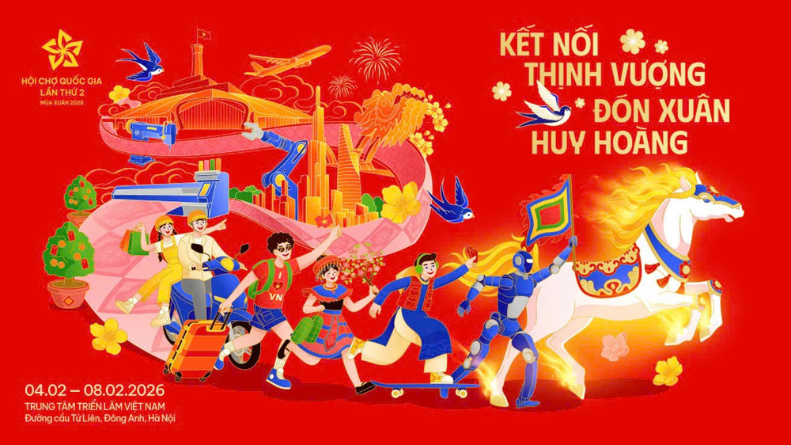
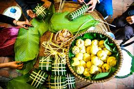
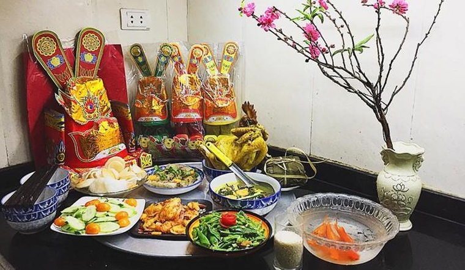
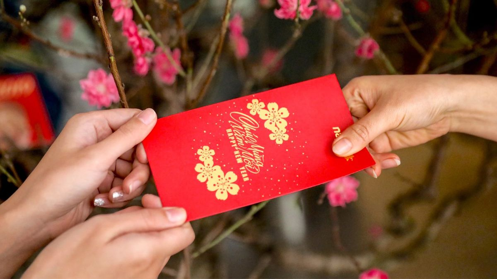

Khi những tà áo dài thướt tha hòa cùng sắc mai vàng rực rỡ bên cổng Ngọ Môn, ấy là lúc Huế Xuân bắt đầu cuộc hành trình đánh thức những giá trị di sản ngàn năm. Không chỉ là một mùa trong năm, Xuân cố đô là sự giao thoa tuyệt mỹ giữa vẻ đẹp trầm mặc của lăng tẩm, cung điện với sức sống mãnh liệt của thiên nhiên xứ Thần Kinh. Bước vào không gian Huế Xuân 2026, du khách như lạc bước vào một cuộn phim lịch sử sống động, nơi những tinh hoa làng nghề truyền thống được phục dựng, nơi những điệu Nhã nhạc cung đình vang lên giữa lòng 'Thành phố Sáng tạo'.Hãy cùng chúng tôi lắng nghe nhịp thở của thời gian, để mỗi bước chân trên đường hoa là một lần chạm vào hồn cốt dân tộc, và để sắc xuân cố đô gieo vào lòng người những niềm tin về một năm mới Phúc - Lộc - An - Khang.
Hành trình
Khởi
Khởi nguồn từ mạch ngầm di sản cố đô, chương mở đầu đánh thức khí chất Phúc Mã, khơi dậy sức sống sáng tạo cho hành trình Xuân Bính Ngọ đầy kiêu hãnh.

Khai
Khai mở sắc xuân Cố đô, thời khắc Phúc Mã xuất thế, đánh dấu sự hiển hiện rực rỡ của những giá trị di sản trong dáng hình mới đầy kiêu hãnh.

Son
'Son' là thời khắc tôn vinh những giá trị tinh túy nhất, nơi vẻ đẹp Phúc Mã hòa quyện cùng tâm hồn Huế để tỏa rạng niềm tự hào di sản

Hội
'Hội' là nơi những tâm hồn đồng điệu cùng quần tụ, sẻ chia niềm vui và viết tiếp bản giao hưởng sức sống của một Huế Xuân rạng ngời
Thông điệp Phúc Mã Phi Xuân
Trong văn hóa và tín ngưỡng Á Đông, hình tượng Ngựa biểu trưng cho sự chuyển động bền bỉ và khát vọng vươn lên không ngừng. Mỗi nhịp vó mở ra một khởi đầu mới, mang theo sinh khí và niềm tin vào những điều tốt lành.
Xuất phát từ ý nghĩa sâu sắc đó, Home Hanoi Xuân 2026 kể câu chuyện về hành trình phiêu du của Phúc Mã – linh vật năm 2026 mang theo sức mạnh, may mắn và tinh thần tiến bước. Trên từng nhịp vó, Phúc Mã dẫn lối mùa xuân mở ra, lan tỏa sinh khí mới và những giá trị tinh hoa của văn hóa Việt trong nhịp sống đương đại.
Phúc Mã Phi Xuân gửi trao lời chúc an khang, thịnh vượng – một đường hoa xuân đậm bản sắc Việt, nơi mỗi bước chân là một trải nghiệm và mỗi khoảnh khắc là niềm tự hào về truyền thống.
HOẠT ĐỘNG TẾT

Gói bánh chưng
"Bánh chưng xanh gói trọn tinh túy từ hạt nếp thơm, đậu vàng bùi bặm và miếng thịt mỡ đậm đà, tạo nên hương vị dẻo rền, nồng nàn đặc trưng của ngày Tết cổ truyền.

Cúng ông Công ông Táo
Cá chép vượt vũ môn, mang theo tâm tình của gia chủ về chốn thiên đình. Cầu mong Táo quân đi thưa đi trình, giữ cho nếp nhà luôn đỏ lửa, ấm êm và tràn đầy hạnh phúc.

Lì xì Tết
Phong bao đỏ thắm mang theo hy vọng cho một năm mới hanh thông. Trao lì xì là trao đi tấm lòng, mong cho người nhận một khởi đầu vạn sự như ý
Dọn nhà đón Tết
Tỉ mỉ lau chùi từng góc nhỏ, tự tay cắm một lọ hoa tươi và thay màu áo mới cho phòng khách – việc trang trí nhà cửa chính là cách đơn giản nhất để sưởi ấm tình cảm gia đình những ngày cuối năm
Khám phá về Tết Nguyên Đán (Youtube: Thư viện Bé con)